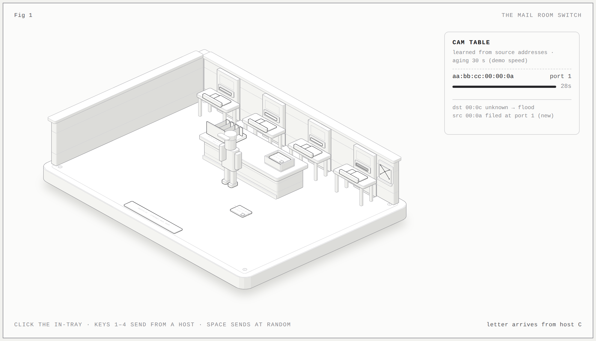
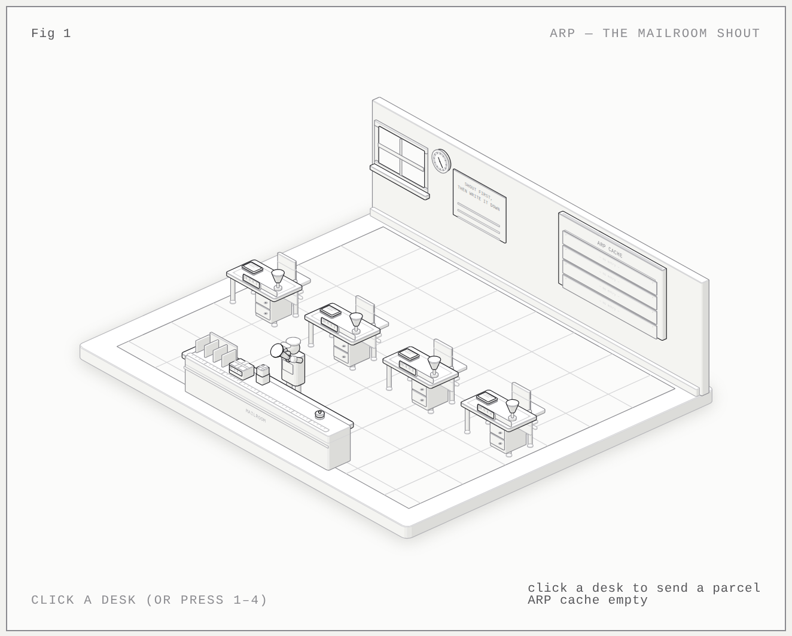
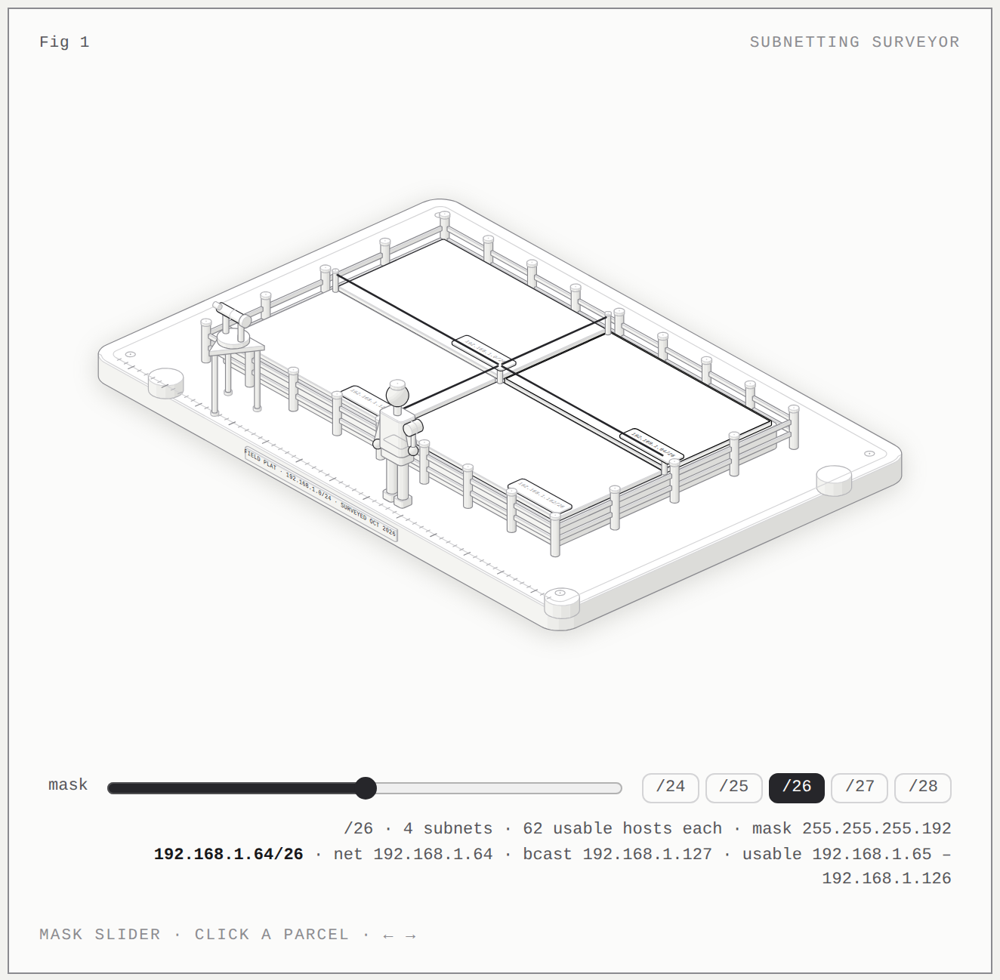
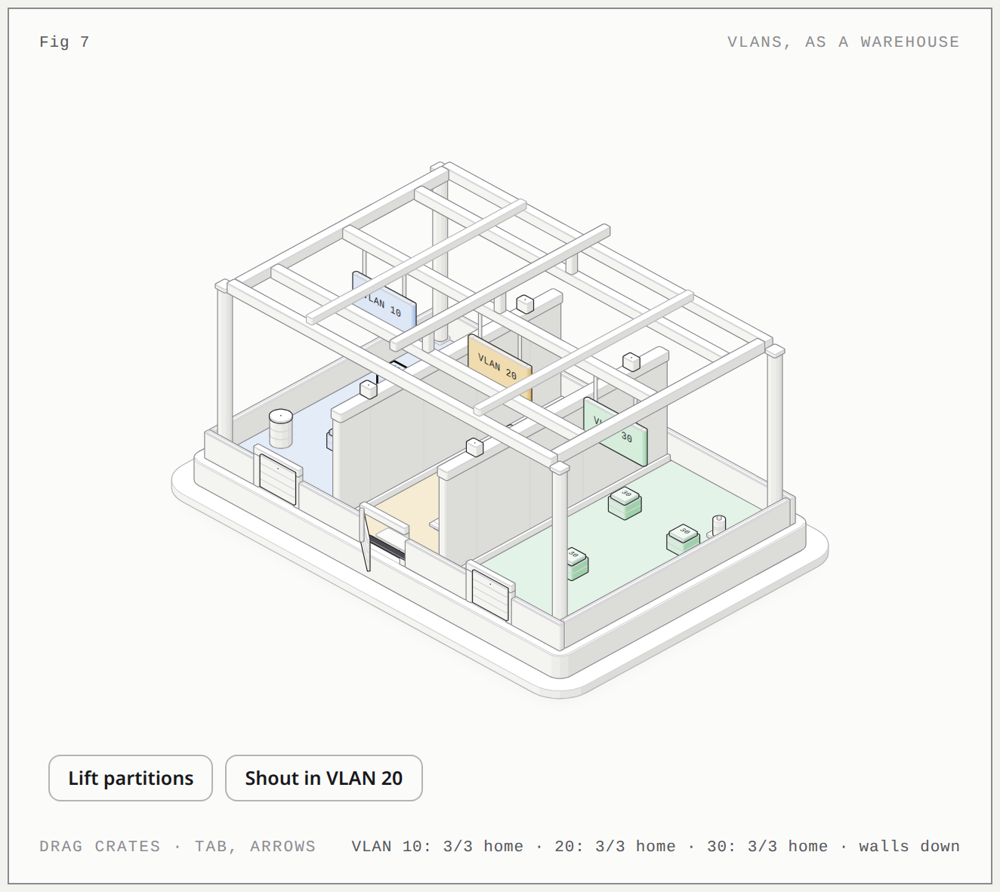
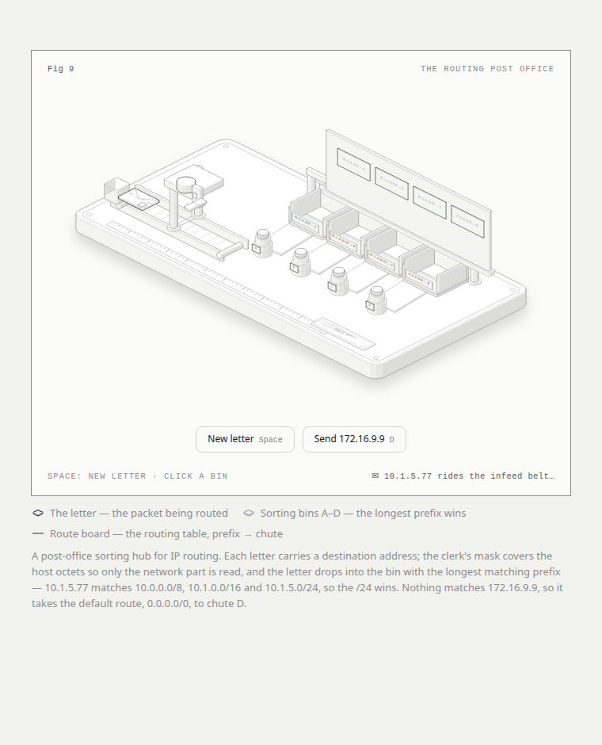
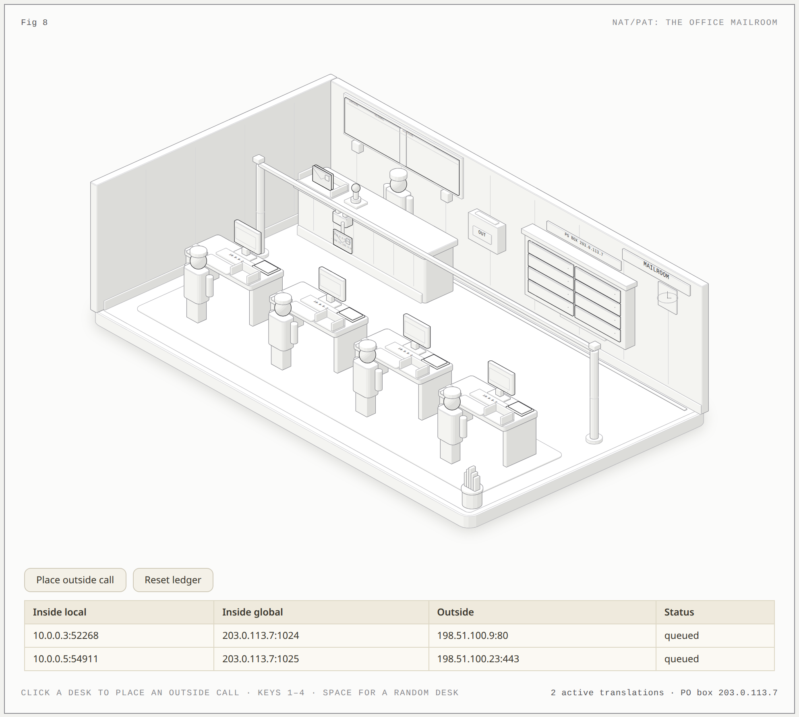
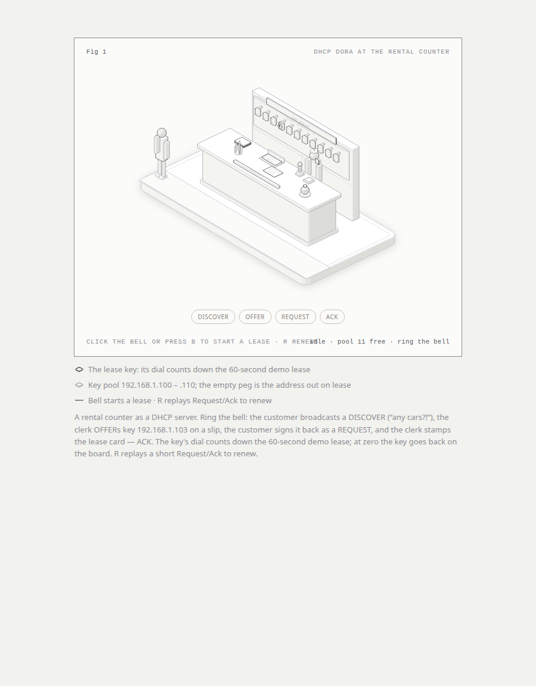
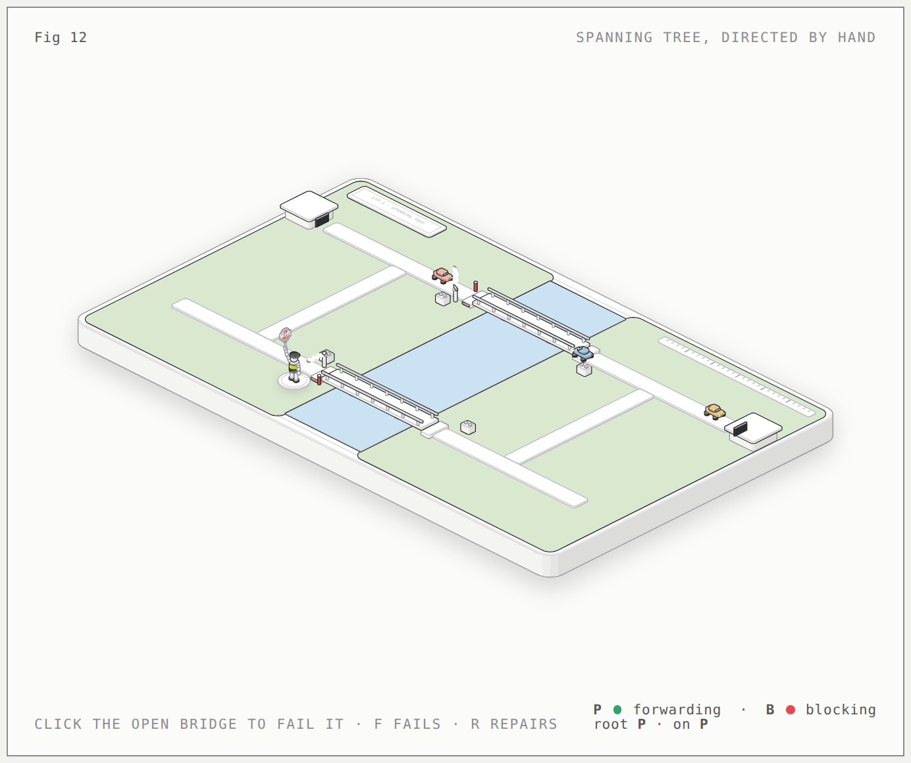

Twelve technical concepts from the CCNA 200-301 plan, each explained as a working machine you can touch. Built with the Anatomy skill: every figure is a standalone page, every number on screen comes from the same model that moves the parts.
Open any card below. All pages work offline, straight from disk.

A mail sorting room: the clerk files each return address into a rolodex by door slot (the CAM table), forwards by lookup, and floods copies to every slot for unknown destinations — with aging timers.

An office mailroom: the clerk shouts "who has 10.0.0.5?" to every desk, pins the answering name tag (MAC) to the desk, and entries age out on a visible timer.

A land surveyor divides a plot of 192.168.1.0: slide the mask /24 → /28 and watch stakes and string lines split every parcel in two, with live network/broadcast/host readouts.

A warehouse split by partition walls into VLAN rooms: drag a crate and it stops dead at the walls. Lift the partitions to see the broadcast domain without VLANs.
A conveyor belt between two switch-warehouses: a stamper slaps a colored VLAN tag on each crate crossing the trunk and a stripper removes it on arrival. Native VLAN rides untagged.

A post office sorting hub: the clerk masks the host octets, reads only the ZIP code, and drops each letter into the most specific of four nested bins — including the 0.0.0.0/0 default.
A paper map taped to the wall versus a live GPS unit. Close the highway and the GPS recalculates while the stale paper route gets an UNREACHABLE stamp.

A corporate mailroom with one public PO box: the clerk keeps a live translation ledger mapping inside extensions to box + apartment number (port), routing replies back to the right desk.

A rental car counter: Discover → Offer → Request → Ack acted out across the counter, keys handed over with a ticking lease timer, and renewal on demand.
A three-knock door exchange: SYN, SYN-ACK, ACK slips with sequence numbers, the door swings open, data notes flow with advancing seq/ack, and FIN closes it.
A nightclub bouncer with a clipboard: patrons queue with packet badges, the finger slides down the ordered rules, first match wins — PERMIT or DENY — with per-rule hit counters and an implicit deny.

A traffic cop at two redundant bridges: one blocked by a STOP sign. Fail the open bridge and the cop waves traffic through listening → learning → forwarding onto the backup.